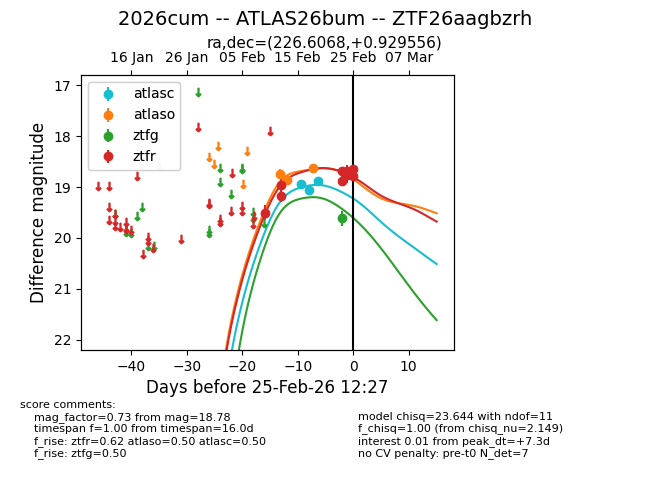
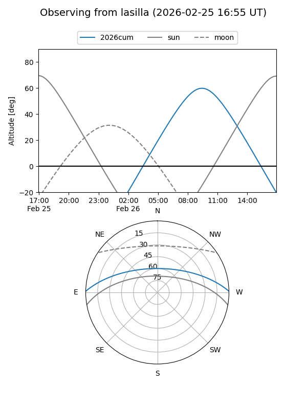
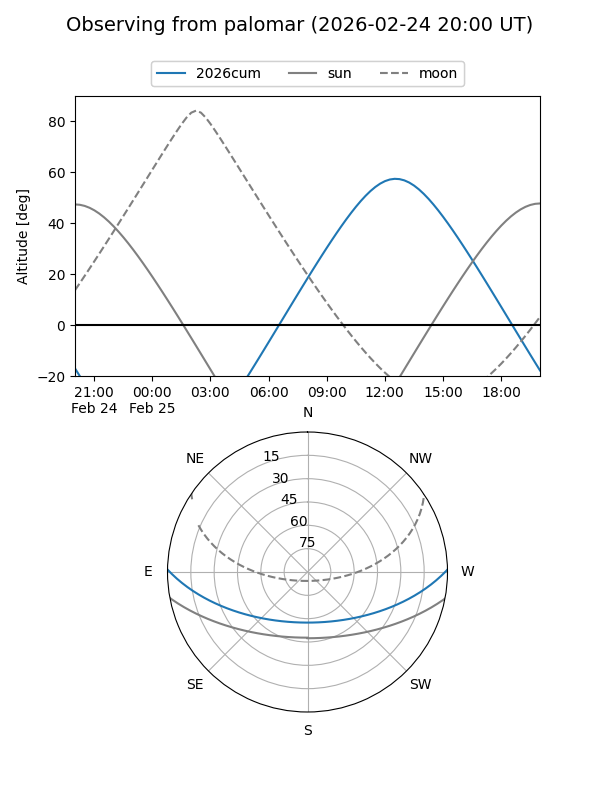
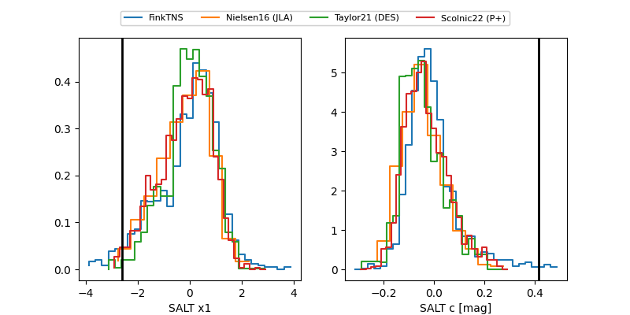

2026cum
Target 2026cum at 2026-02-25 12:28
Aliases and brokers:
FINK: link
Lasair: link
ALeRCE: link
TNS: link
YSE: link
alt names
ZTF26aagbzrh (ztf,fink_ztf)
2026cum (tns,yse)
ATLAS26bum (atlas)
Coordinates:
equatorial (ra, dec) = 226.6068,+0.92956
equatorial (HMS+DMS) = 15:06:25.64,+00:55:46.40
galactic (l, b) = (359.6469,+48.35884)
Flags:
Photometry:
last atlasc=18.87, atlaso=18.62, ztfg=19.61, ztfr=18.78
3 atlasc, 3 atlaso, 1 ztfg, 9 ztfr detections
Lightcurve

Visibility


Additional plots
